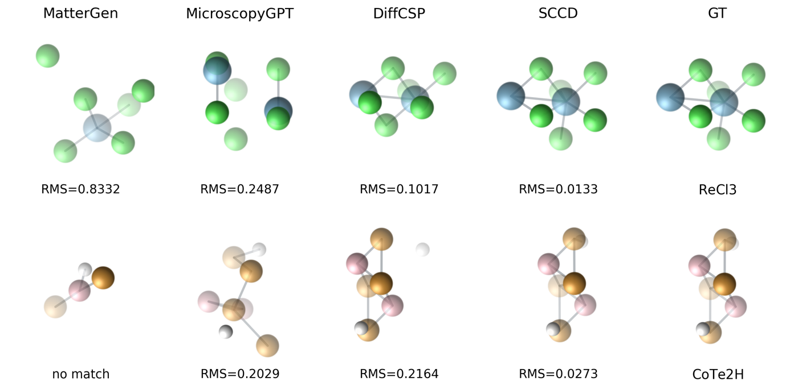

The benchmark
The long-term aim is a direct bridge from microscopy to materials: generate a structure straight from a STEM image, then analyze it. This benchmark targets the first and hardest link, recovering a crystal structure from a single noisy image. It pairs STEM images with crystal targets and one evaluation suite, in two parts:
Synthetic
1021 structures · three controlled noise regimes (low / mid / high). Physics‑inspired forward model: probe blur → Poisson counting → scan jitter → background → readout.
Real‑5
5 genuine 2D‑monolayer real STEM images (MoTe₂, WSe₂, WS₂, MoS₂, graphene) with single‑layer ground truth. Zero‑shot, no templating.
Data lives on the Hugging Face Hub (not in the code repo):
python scripts/download_benchmark.py --config all
Reading a structure out of a microscopy image is still an open problem. The benchmark is meant to grow: contributions of data (other material classes, more real images) and of new methods are welcome.
Leaderboard
↑ higher is better · ↓ lower is better · best per column in bold. Updated — · read live from GitHub.
Qualitative comparison
Each method's rank-1 reconstruction next to the ground truth, labelled with the RMS to GT.

Regenerate from predictions with scripts/plot_comparison.py (needs pip install -e ".[viz]").
Methods
Each method implements the same Method interface and is scored the same way.
Click one for details, or add your own.
Evaluate and contribute
pip install -e .
python scripts/download_benchmark.py --config all
python scripts/evaluate.py --method <name> --benchmark synthetic --noise low # all paper metricsContributions are welcome: a method (through the Method interface, with a row
added to leaderboard.json), a new metric (a pure function in eval/metrics.py), or
new data (other material classes or more real STEM images) on the
dataset page.
Citation
If you use STEM2Crystal-Bench or SCCD, please cite: